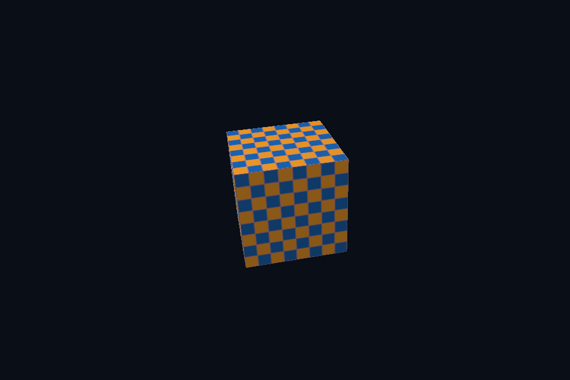

dx23_orbit_camera · 轨道相机与投影
54 课目录
目的与实际执行
相同 GLM 列主序与 HLSL mul(M,v) 连接；当前场景的简化法线变换只用于旋转/均匀缩放。导入静态层级时已在 CPU 用逆转置处理节点法线；新增非均匀模型变换仍需正确 shader 约定。
本程序有独立实验选择与验证路径，公共实现集中在 advanced_labs.cpp。设备/API 检查、数值 compute 与图形渲染采用不同证据；不是每个程序都会弹出窗口。
构建和运行
cmake --preset dx12
cmake --build --preset dx12-debug --target dx23_orbit_camera --parallel 4
.\DirectX12\build\bin\Debug\dx23_orbit_camera.exe
深入学习：数据、接口与执行
本课的真实源码切片
来自 DirectX12/common/advanced_labs.cpp，第 578—621 行；这是现有实现的局部摘录，末尾可能处于函数中间，不是可单独编译的完整程序。
scene.frameProvider = [](float aspect, float time, bool) {
auto projection = glm::perspectiveRH_ZO(glm::radians(48.f), aspect, .1f, 100.f);
glm::vec3 eye(std::sin(time * .3f) * 4, 1.6f, std::cos(time * .3f) * 4);
return Frame{projection * glm::lookAtRH(eye, glm::vec3(0), glm::vec3(0, 1, 0))};
};
};
// 计算先独立提交完成，再开始图形命令录制，避免在同一 allocator 正录制时把它重置。
render.beforeFrame = [id](DxScene& scene, float time) {
// The compute submission must finish before DxWindow resets its allocator to record graphics.
if (id == 29)
std::static_pointer_cast<RenderState>(scene.extension)->particles->execute(time);
};
return dxMain(argc, argv, mode, render);
}
void surfaceInspection(const LabOptions& options) {
require(glfwInit() != 0, "GLFW init failed");
glfwWindowHint(GLFW_CLIENT_API, GLFW_NO_API);
glfwWindowHint(GLFW_VISIBLE, GLFW_FALSE);
auto* window = glfwCreateWindow(960, 640, "DXGI inspection", nullptr, nullptr);
require(window != nullptr, "Window failed");
{
DxWindow app(window, 2, options.warp);
DXGI_SWAP_CHAIN_DESC1 desc{};
dxCheck(app.swap->GetDesc1(&desc));
require(desc.BufferCount == 2 && desc.SwapEffect == DXGI_SWAP_EFFECT_FLIP_DISCARD,
"Unexpected swapchain configuration");
app.render(1, nullptr);
std::cout << "Verified HWND swapchain, buffers=" << desc.BufferCount
<< ", index=" << app.swap->GetCurrentBackBufferIndex() << '\n';
}
glfwDestroyWindow(window);
glfwTerminate();
}
// 查询、诊断与字节检查有明确的结果；合法 INFO 消息可能被默认过滤，临时空过滤器只扩大接收范围。
void inspection(DxDevice& c, const LabOptions& options, int id) {
if (id == 37) {
UINT count = 0;
for (UINT i = 0;; ++i) {
ComPtr<IDXGIAdapter1> adapter;
auto hr = c.factory->EnumAdapters1(i, &adapter);
if (hr == DXGI_ERROR_NOT_FOUND)
break;
dxCheck(hr);
DXGI_ADAPTER_DESC1 d{};
同主题跨 API 导航
先预测，再验证
先输出 N，再输出 NoL，最后加入 D/G/F，说明这样如何定位亮度不一致。
参考推导：法线不同先查空间与布局；法线一致而高光形状不同查 roughness/BRDF；整体比例不同查灯光、衰减、tone mapping/gamma。不要靠任意曝光隐藏输入错误。
验证与边界
运行 --smoke 执行有限自动检查。数值实验读取实际 GPU 结果，图形实验检查非空图像并可查看读回。交互重建与性能还需额外证据；窗口 renderer 当前保留串行等待，双槽计算实验不会被描述为完整多帧呈现引擎。
实际画面
